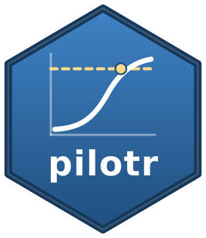

Precision and ROPE design analysis at a fixed sample size
Source:R/precision.R
precision_design.RdA fast frequentist analogue of a Bayesian highest-density-interval-versus-ROPE design
analysis. Across Monte Carlo replicates, fit the model and record, for each focal fixed
effect, whether its 95% confidence interval falls entirely outside a region of practical
equivalence (a practically meaningful effect) or entirely inside it (practical equivalence
to zero), along with the expected interval width. Requires the lme4 package.
Usage
precision_design(
spec,
focal,
formula = NULL,
prep = NULL,
rope = 0.05,
n_sims = 100,
workers = 1
)Arguments
- spec
A design specification (path or list).
- focal
A named numeric vector mapping focal coefficient names to their true values, or a character vector of coefficient names.
- formula
Optional
lme4formula; ifNULLit is derived from the specification viamodel_formula().- prep
Optional function mapping a simulated data set to the modelling data; if
NULLit is derived viamodel_data(), which log-transforms the outcome and builds the contrast and interaction columns, so focal names follow the auto-formula (interactions written asa_b).- rope
Half-width of the region of practical equivalence; an effect with
abs(beta) < ropeis treated as practically equivalent to zero. Set it clearly narrower than the smallest effect worth detecting, because the probability of a determinate meaningful decision about an effect no larger thanropecannot rise above 0.5 however large the sample.- n_sims
Number of Monte Carlo replicates.
p_meaningfulandp_equivalentare proportions over the converged replicates, so they carry a Monte Carlo standard error of aboutsqrt(p * (1 - p) / n_sims)and move in coarse steps whenn_simsis small. At least 200 replicates are advisable for real planning.- workers
Number of local worker processes over which to spread the replicates. The default of 1 runs serially. Because every replicate seeds the shared RNG from its own index, any worker count returns results identical to a serial run.
Value
A data frame with one row per focal effect and columns param, true,
mean_ci_width, p_meaningful, p_equivalent, and n_converged. The interval
behind mean_ci_width and the ROPE decisions is the Wald approximation described in
Details.
Details
The interval is a Wald approximation: the estimate plus or minus 1.96 standard errors
from the model's variance-covariance matrix. This fixed-z interval is chosen for speed and
for comparability across replicates; in small samples it is somewhat narrower than a
Satterthwaite t interval, so p_meaningful and mean_ci_width are slightly optimistic
at small sample sizes.
Examples
# \donttest{
if (requireNamespace("lme4", quietly = TRUE)) {
spec <- build_spec(list(name = "pr", seed = 1, design_kind = "within",
include_items = TRUE, n_subject = 12, n_item = 12, factor_name = "cond",
lev1 = "a", lev2 = "b", intercept = 6, effect = 0.05,
subj_int_sd = 0.12, subj_slope_sd = 0.04, subj_corr = 0.2,
item_int_sd = 0.08, item_slope_sd = 0.02, item_corr = -0.1,
family = "shifted_lognormal", resp_name = "", sigma = 0.3, shift = 200))
# n_sims is small so the example runs quickly. Use 200 or more for real planning.
precision_design(spec, focal = c(effect = 0.05), rope = 0.02, n_sims = 10)
}
#> param true mean_ci_width p_meaningful p_equivalent n_converged
#> 1 effect 0.05 0.1667033 0.2 0 10
# }